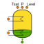

| ConstantRefHTC | BOOLEAN | TRUE | If FALSE, uses Cooper pool boiling correlation | |
| DynamicRefHTC | BOOLEAN | FALSE | If TRUE, applies a low-pass filter to HTC calculations | |
| AccountforGravity | BOOLEAN | TRUE | If TRUE, applies static head to pressure calcs | |
| TsatInCelsius | BOOLEAN | TRUE | If FALSE SaturationTemp port outputs Tsat in Kelvin | |
| D_out | REAL | 0.001 | Outlet pipe diameter | m |
| z_out | REAL | 0.005 | Outlet pipe elevation above bottom | m |
| K_cool | PORTS_LIB.analog_signal | (n = 1) | IN | Percentage of max cooling power | |
| K_heat | PORTS_LIB.analog_signal | (n = 1) | IN | Percentage of max heating power | |
| Level | PORTS_LIB.analog_signal | (n = 1) | OUT | Liquid level inside vessel in % of volume | |
| Pressure | PORTS_LIB.analog_signal | (n = 1) | OUT | ||
| SaturationTemp | PORTS_LIB.analog_signal | (n = 1) | OUT | ||
| f_out | CRYOLIB.fluid | OUT |
| D | REAL | 1 | Shell diameter | m | |
| L | REAL | 1.5 | Shell height | m | |
| Level0 | REAL | 20 | Initial liquid level in % | % | |
| P0 | REAL | 20 | Initial pressure | bar | |
| Q_cool_max | REAL | 1000 | Maximum cooling capacity | W | |
| Q_heat_max | REAL | 1000 | Maximum heating capacity | W | |
| T0 | REAL | 255 | Initial temperature | K | |
| Th | REAL | 0.01 | Shell thickness | m | |
| Tw0 | REAL | 243.15 | Initial wall temperature | K | |
| alpha_ref | REAL | 1000 | Refrigerant to shell heat transfer coefficient | W/(m^2·K) | |
| h0 | REAL | 250000 | Initial enthalpy | J/kg | |
| init | ENUM InitialConditionsAccu | P_h | |||
| mat | ENUM THERMAL.PipeMat | SS_304 | Shell material | ||
| tauAlpha | REAL | 3 | Time constant for low-pass HTC calculations | s | |
| x0 | REAL | 0.1 | Initial vapour quality | - |
| wall | LumpedShell_insulated | |
| ref | CO2AccumulatorBase_prescribed |
| ref.AccountforGravity | AccountforGravity | PARA | BOOLEAN | If TRUE, adds static pressure at fluid ports | "" |
| ref.ConstantRefHTC | ConstantRefHTC | PARA | BOOLEAN | If FALSE, uses Cooper pool-boiling correlation | "" |
| ref.D | D - 2 * Th | DATA | REAL | Diameter | "m" |
| ref.D_out[nports_out] | { D_out} | DATA | REAL | Outlet port diameters | "m" |
| ref.DynamicRefHTC | DynamicRefHTC | PARA | BOOLEAN | If TRUE, adds low-pass fliter to HTC calculations | "" |
| ref.L | L | DATA | REAL | Height | "m" |
| ref.Level0 | Level0 | DATA | REAL | Initial liquid level | "%" |
| ref.P0 | P0 | DATA | REAL | Initial refrigerant pressure | "bar" |
| ref.Q_cool_max | Q_cool_max | DATA | REAL | Maximum cooling capacity | "W" |
| ref.Q_heat_max | Q_heat_max | DATA | REAL | Maximum heating capacity | "W" |
| ref.T0 | T0 | DATA | REAL | Initial refrigerant temperature | "K" |
| ref.alpha_ref | alpha_ref | DATA | REAL | Refrigerant-to-shell HTC | "W/(m^2·K)" |
| ref.h0 | h0 | DATA | REAL | Initial refrigerant enthalpy | "J/kg" |
| ref.init | init | DATA | ENUM InitialConditionsAccu | Specify initial conditions | "" |
| ref.tauAlpha | tauAlpha | DATA | REAL | Time constant for HTC correlation low-pass filter | "s" |
| ref.x0 | x0 | DATA | REAL | Initial vapour quality | "" |
| ref.z_out[nports_out] | { z_out} | DATA | REAL | Outlet port heights | "m" |
| wall.Do | D | DATA | REAL | Outer diameter | "m" |
| wall.L | L | DATA | REAL | "m" | |
| wall.Th | Th | DATA | REAL | Thickness | "m" |
| wall.Tw0 | Tw0 | DATA | REAL | Initial wall temperature | "K" |
| wall.mat | mat | DATA | ENUM THERMAL.PipeMat | Wall material | "" |
Document generated automatically (Date: 2021:03:16, Time: 14:29:38)